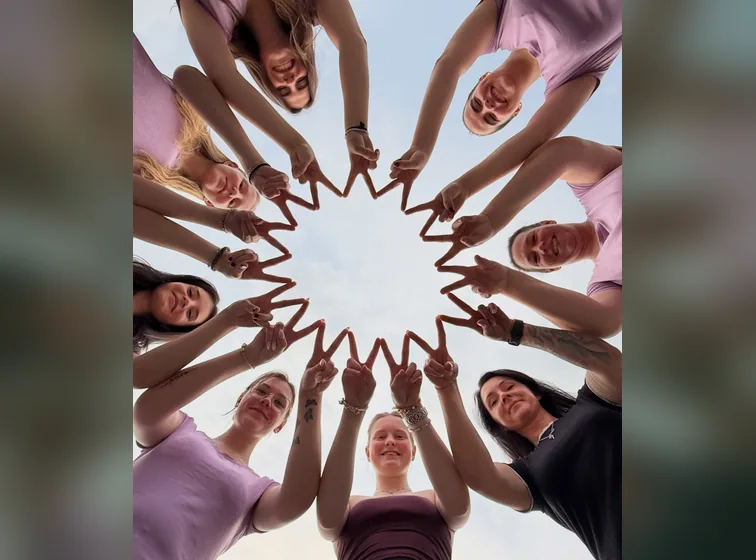

Eine neue Tanzgarde. Ein gemeinsamer Traum. Ganz viel Herzblut.
Manchmal beginnt etwas Großartiges mit einer einfachen Idee, einer gemeinsamen Leidenschaft und Menschen, die bereit sind, für ihren Traum alles zu geben.
Genau so beginnt die Geschichte unserer Moonlights, der neu gegründeten Tanzgarde des Feldmarker Karnevalskomitees. Was uns verbindet, ist die Freude an Musik und Bewegung, die Begeisterung für den Karneval und der Wunsch, gemeinsam über uns hinauszuwachsen.
Die Moonlights sind mehr als eine Tanzgruppe: Hier entstehen Freundschaften, hier wird einander Mut gemacht und hier zählt jede und jeder Einzelne. Denn die schönsten Momente auf der Bühne entstehen durch das Vertrauen hinter den Kulissen.
Erfolg beginnt im Training
Was später so leicht und selbstverständlich aussieht, bedeutet zuvor viele Stunden Arbeit. Neue Choreografien werden einstudiert, Schritte wiederholt, Bewegungen verfeinert und Herausforderungen gemeinsam gemeistert.
Natürlich wird dabei auch gelacht, angefeuert und jeder Fortschritt gefeiert. Denn nicht die perfekte Einzelperson macht unsere Tanzgarde besonders, sondern das, was wir zusammen erreichen.
Trainiert werden unsere Moonlights von Nadine Jellonek. Mit viel Engagement begleitet sie die Gruppe auf ihrem Weg und fördert neben tänzerischem Können auch Zusammenhalt, Disziplin und Selbstvertrauen.

Unsere ersten großen Highlights
Nach intensivem Training war es endlich so weit: Bei der Proklamation des neuen Weseler Stadtprinzenpaares und beim Kasernensturm 2026 durften unsere Moonlights zeigen, wofür sie so hart gearbeitet hatten.
Aus Aufregung wurde Vorfreude, aus Vorbereitung ein unvergesslicher Bühnenmoment. Besonders schön war die Unterstützung aus den eigenen Reihen: Zahlreiche Mitglieder des FKK waren dabei, feuerten die Gruppe an und zeigten, was unsere Vereinsfamilie ausmacht.
Wir stehen füreinander ein, feiern miteinander und sind stolz auf das, was wir gemeinsam erreichen. Diese Auftritte waren erst der Anfang!
🎬 Moonlights bei der Proklamation
Erlebt die schönsten Momente des Auftritts noch einmal in unserem Zusammenschnitt – voller Energie, Freude und Leidenschaft.
💜 Werde Teil unserer Moonlights!
Du liebst Musik, tanzt gerne und möchtest Teil einer starken Gemeinschaft werden? Dann bist du bei uns richtig! Du musst nicht von Anfang an perfekt sein. Viel wichtiger sind Freude an Bewegung, Teamgeist, Zuverlässigkeit und Lust darauf, gemeinsam etwas zu erleben.
Wir freuen uns über neue Mitglieder!
Jetzt Kontakt aufnehmenmoonlights@fkkwesel.de